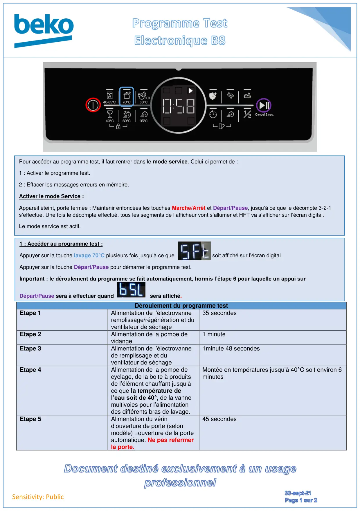
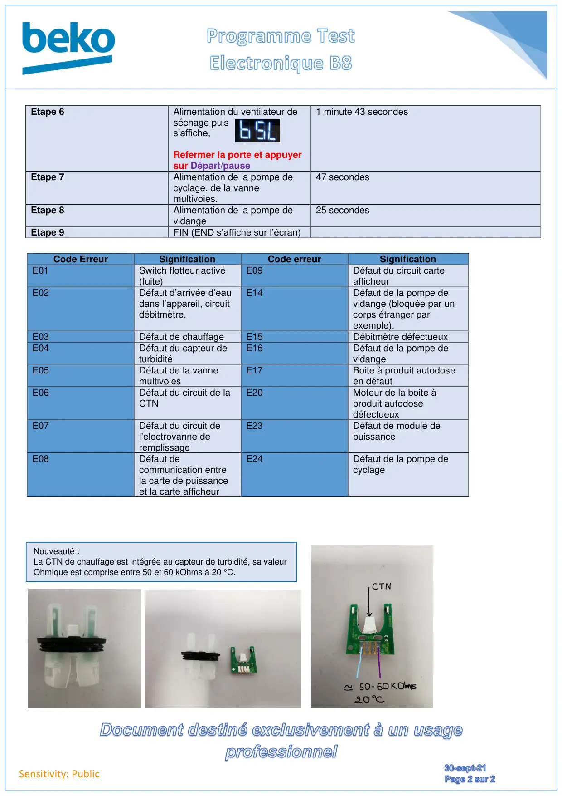

Prog Test Electronique B8

Sensitivity: PublicDéroulement du programme testEtape 1Alimentation de l’électrovanneremplissage/régénération et duventilateur de séchage35 secondesEtape 2Alimentation de la pompe devidange1 minuteEtape 3Alimentation de l’électrovannede remplissage et duventilateur de séchage1minute 48 secondesEtape 4Alimentation de la pompe decyclage, de la boite à produitsde l’élément chauffant jusqu’àce que la température del’eau soit de 40°, de la vannemultivoies pour l’alimentationdes différents bras de lavage.Montée en températures jusqu’à 40°C soit environ 6minutesEtape 5Alimentation du vérind’ouverture de porte (selonmodèle) =ouverture de la porteautomatique. Ne pas refermerla porte.45 secondesPour accéder au programme test, il faut rentrer dans le mode service. Celui-ci permet de :1 : Activer le programme test.2 : Effacer les messages erreurs en mémoire.Activer le mode Service :Appareil éteint, porte fermée : Maintenir enfoncées les touches Marche/Arrêt et Départ/Pause, jusqu’à ce que le décompte 3-2-1s’effectue. Une fois le décompte effectué, tous les segments de l’afficheur vont s’allumer et HFT va s’afficher sur l’écran digital.Le mode service est actif.1 : Accéder au programme test :Appuyer sur la touche lavage 70°C plusieurs fois jusqu’à ce que soit affiché sur l’écran digital.Appuyer sur la touche Départ/Pause pour démarrer le programme test.Important : le déroulement du programme se fait automatiquement, hormis l’étape 6 pour laquelle un appui surDépart/Pause sera à effectuer quandsera affiché.
1 / 2
Sensitivity: PublicEtape 6Alimentation du ventilateur deséchage puiss’affiche,Refermer la porte et appuyersur Départ/pause1 minute 43 secondesEtape 7Alimentation de la pompe decyclage, de la vannemultivoies.47 secondesEtape 8Alimentation de la pompe devidange25 secondesEtape 9FIN (END s’affiche sur l’écran)Code ErreurSignificationCode erreurSignificationE01Switch flotteur activé(fuite)E09Défaut du circuit carteafficheurE02Défaut d’arrivée d’eaudans l’appareil, circuitdébitmètre.E14Défaut de la pompe devidange (bloquée par uncorps étranger parexemple).E03Défaut de chauffageE15Débitmètre défectueuxE04Défaut du capteur deturbiditéE16Défaut de la pompe devidangeE05Défaut de la vannemultivoiesE17Boite à produit autodoseen défautE06Défaut du circuit de laCTNE20Moteur de la boite àproduit autodosedéfectueuxE07Défaut du circuit del’electrovanne deremplissageE23Défaut de module depuissanceE08Défaut decommunication entrela carte de puissanceet la carte afficheurE24Défaut de la pompe decyclageNouveauté :La CTN de chauffage est intégrée au capteur de turbidité, sa valeurOhmique est comprise entre 50 et 60 kOhms à 20 °C.
2 / 2